Determination of crystal structure of a powder sample by X-Ray Diffractometer
Objective
To identify the unknown powder sample by indexing of peaks with the help of obtained XRD pattern.
Apparatus used:
X-Ray Diffractometer, Sample and Sample holder.
Description Diffractometer: A diffractometer is a measuring instrument for analyzing the structure of a material from the scattering pattern produced when a beam of radiation or particles (such as X-rays or neutrons) interacts with it.
X-Rays : An X-ray, or X-radiation, is a penetrating form of high-energy electromagnetic radiation. Most X-rays have a wavelength ranging from 10 picometers to 10 nanometers, corresponding to frequencies in the range 30 petahertz to 30 exahertz and energies in the range 124 eV to 124 keV.
Monochromatic radiation: Monochromatic light is light (optical radiation) where the optical spectrum contains only a single optical frequency.
D-spacing: The d-spacing can be described as the distance between planes of atoms that give rise to diffraction peaks. Each peak in a diffractogram results from a corresponding d-spacing.
 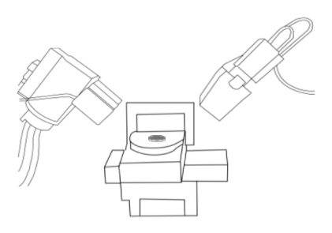
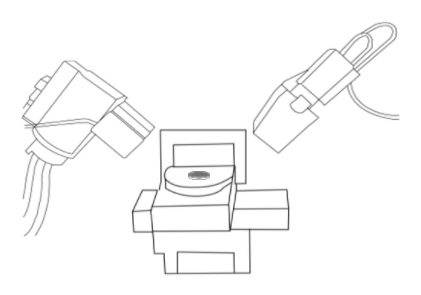
Obtain Finely spread powder sample on the sample holder. Ensure that its surfaces are entirely flat.
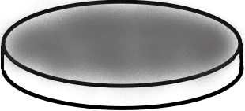
The sample under consideration is Pure Magnesium powder. Magnesium is a chemical element with the symbol Mg and atomic number 12. It is a shiny gray solid which bears a close physical resemblance to the other five elements in group 2 or the alkaline earth metals of the periodic table.
Approximately align the sample holder to the centre of the platform.
 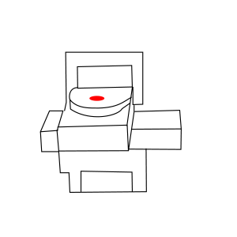
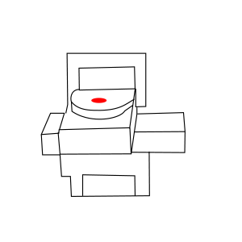
Set the parameters necessary for experimentation on the computer software associated with the XRD Machine.
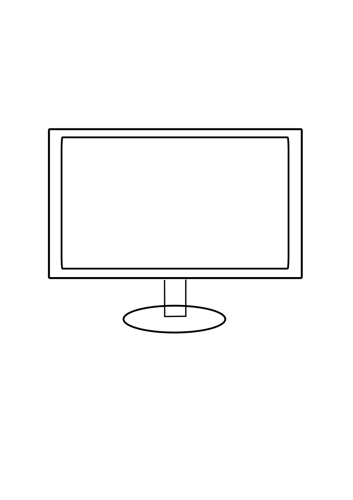 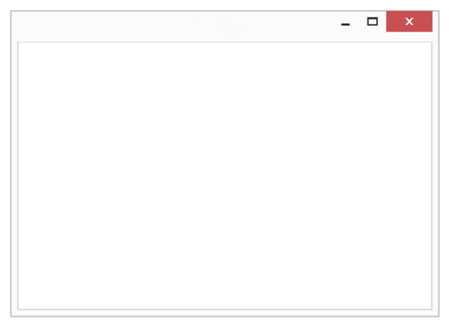Prepare absolute scan
Configuration
Programmable XY with manual2
Scan axis
Gonio
Start angle
19.9946
End angle
80.0000
Step size
0.0262606
Time per step
10.200
Next time per step
7.140
Scan speed
0.656514
Pre-set counts
10000
Number of steps
2285
Estimated time
00:01:39
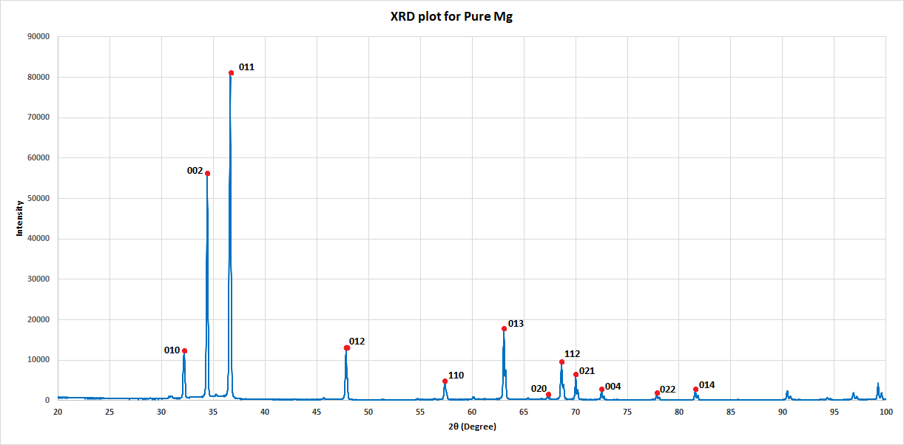
The given XRD plot is obtained from the computer after performing XRD analysis. The hkl values are given corresponding to the peaks in the graph.
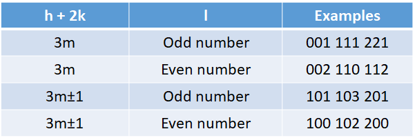The table above shows the rules hkl values must satisfy for the HCP (Hexagonal Closed Packing) crystal structure
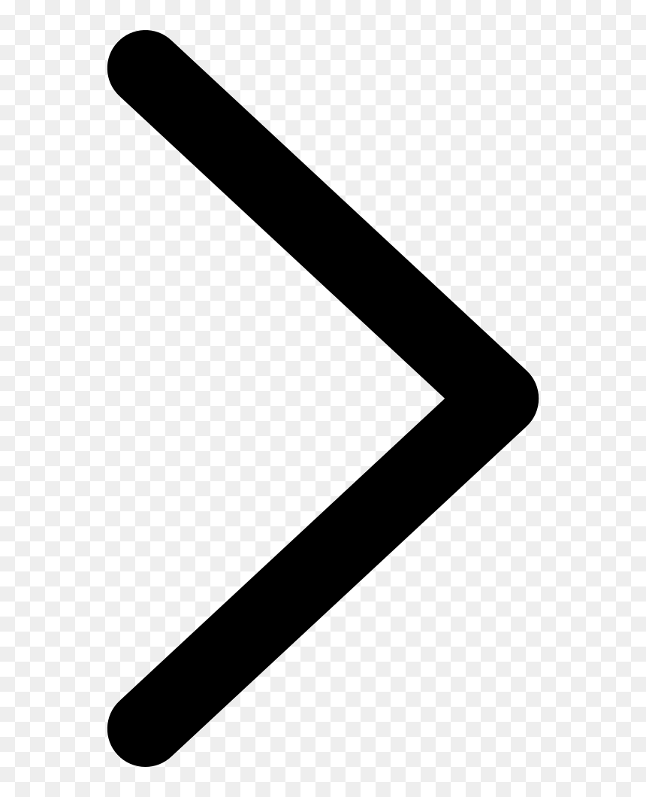 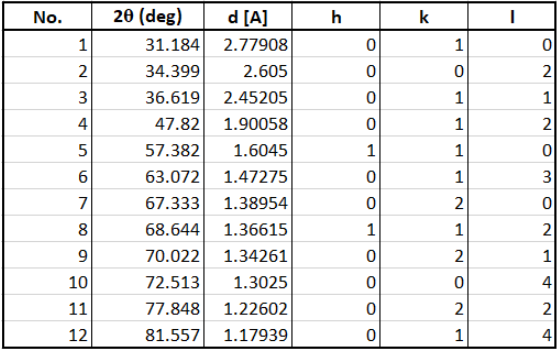The calculated hkl and d-spacing (interplanar spacing) values are displayed corresponding to the 2θ values.
Result: It can be observed that the table displayed satisfies this condition, hence it can be confirmed that the sample obtained has an HCP crystal lattice. The d-spacing outputted by the computer corresponds to the d-spacing values of Pure Mg. It must be noted that these d-spacing values are unique to Pure Mg. Therefore it can be confirmed from XRD analysis that the sample obtained is Pure Mg having a HCP crystal structure.